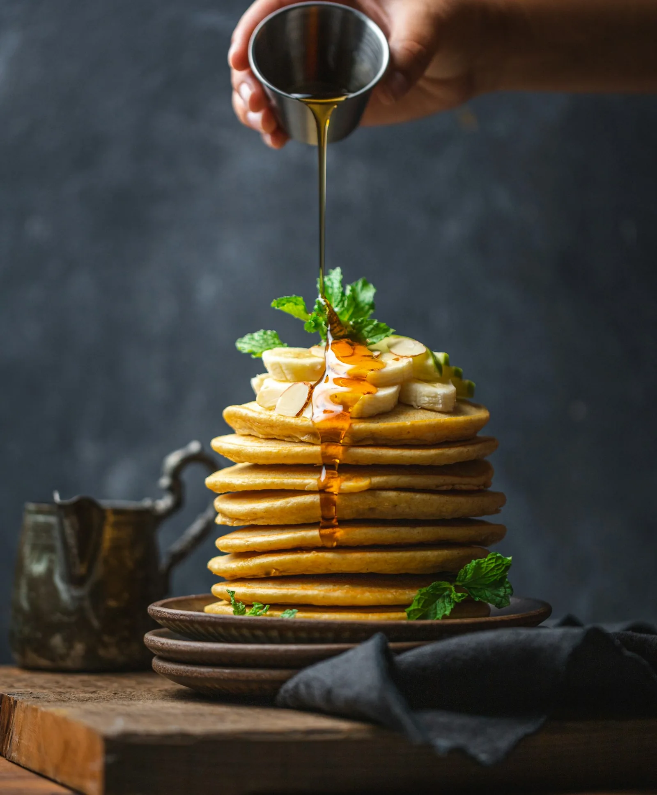
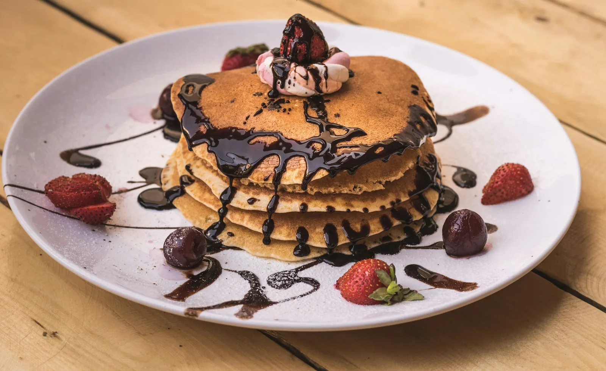
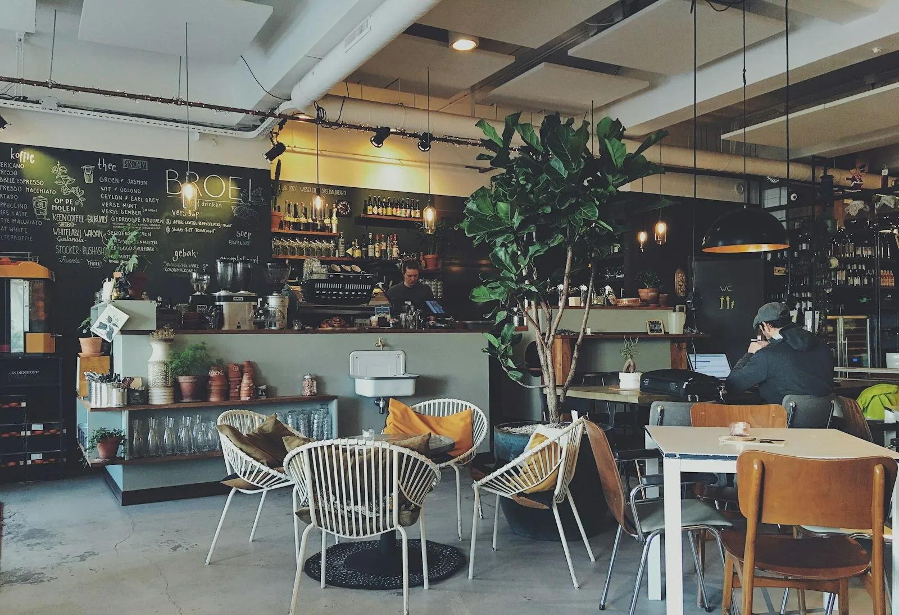

Pancakes
Golden, generous stacks — a breakfast-table favourite.

Gatlinburg, Tennessee
A small, cozy mom-and-pop diner on East Parkway — the breakfast locals keep coming back for.
Welcome to Trish's
Tucked away from the main Gatlinburg bustle, Trish's Mountain Diner is the kind of place visitors hear about from locals — and then return to, trip after trip. The room is small, clean and cozy, the cooking is down-home Southern, and the welcome is warm, family-style Southern service.
Come for breakfast, stay for lunch, and on Friday and Saturday evenings, come back for dinner. Generous portions, very reasonable prices, and a shaded side deck where dogs are welcome.

Signature Breakfast
Visitors call it the best breakfast in Gatlinburg and Pigeon Forge — and the reason is on the plate: homemade biscuits, homemade syrup, generous portions, and cooking that tastes like it came out of a family kitchen, not a production line.
Many dishes come in at very reasonable prices, which is part of why first-time visitors become regulars. Come hungry.
Plan a Visit
Breakfast 7–11am, lunch 11am–3pm — and dinner Friday and Saturday, 3–8pm.
Find us at 3614 E Parkway, just off the beaten path in Gatlinburg.
Take a seat in the cozy dining room — or on the shaded side deck with your dog.
Why Locals Choose Trish's
Regularly described as the best breakfast in Gatlinburg and Pigeon Forge — a hidden-gem locals' spot.
Big portions at very reasonable prices — many dishes under $11.
Family-style hospitality that makes first-timers feel like regulars.
A tidy mom-and-pop room, off the beaten path and easy to love.
Guests come back trip after trip — and bring friends with them.
Travellers' Choice 2026 and ranked #11 of 120 restaurants in Gatlinburg.
Gallery
Tap any photo to view it larger.
Visit Us
Dinner is served on Friday and Saturday evenings only. Please call ahead to confirm today's hours.
3614 E Parkway, Gatlinburg, TN 37738
Dog-friendly shaded side-deck seating
Military discount available
Good to Know
Dinner is served on Friday and Saturday only, from 3:00 to 8:00 PM. Breakfast runs 7:00–11:00 AM and lunch 11:00 AM–3:00 PM.
Yes — dogs are welcome on the shaded side deck.
Yes, a military discount is offered. Ask your server when you visit.
Down-home Southern cooking: country fried steak, homemade biscuits and syrup, grits, eggs, waffles, pancakes, omelettes, French toast, build-your-own breakfast bowls, catfish, meatloaf specials, loaded potato soup, BLT combos, and 15–20 fresh vegetables daily.
Small, clean and cozy — a mom-and-pop dining room off the beaten path, with a shaded side deck for outdoor seating.
Get in Touch
Questions about hours, the day's cooking, or a visit? Send a message — it opens in your email app addressed to the diner.
Prefer to talk? Call (865) 325-8093 or email trishsmountaindiner@gmail.com.